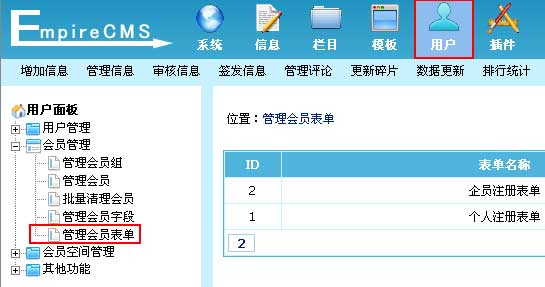
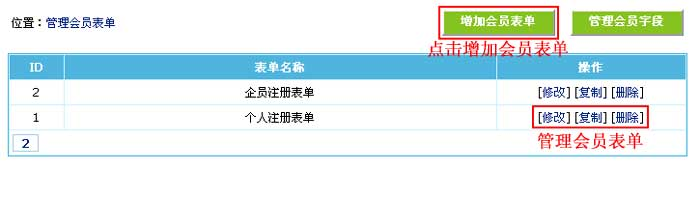
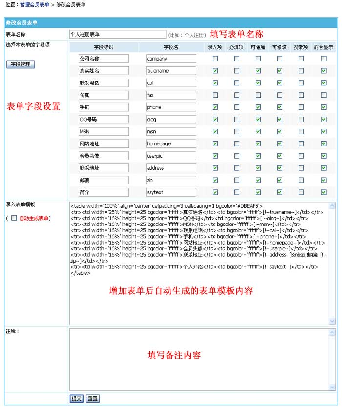

自定义会员表单
本功能为对前台会员的注册表单进行管理。
一、登录后台，单击“
用户
”菜单，选择“
管理会员表单
”子菜单，进入管理会员表单界面：

二、进入管理会员表单界面：

三、修改会员表单：

表单名称
填写表单名称。比如：企业会员表单
选择本表单的字段项
字段标识：
表单中设置项的名称。
录入项：
可以填写内容的字段。
必填项：
设置此字段内容不能为空。
可增加：
字段内容在注册时是否可以填写。
可修改：
字段内容在修改资料时是否可以更改。
搜索项：
此字段在管理会员列表页面是否支持搜索。(e/member/list)
前台显示：
此字段内容在查看会员资料页面是否显示。(e/member/ShowInfo)
录入表单模板
增加表单后自动生成的表单模板内容，增加表单时一般不设置，可增加表单后再修改。
自动生成表单：
修改表单时可以选择让系统再次自动生成表单模板。
注释
填写备注内容。
相关链接：
1、
帝国CMS功能解密之：会员自定义字段搜索
2、
帝国CMS功能解密之：多会员组的注册导航制作